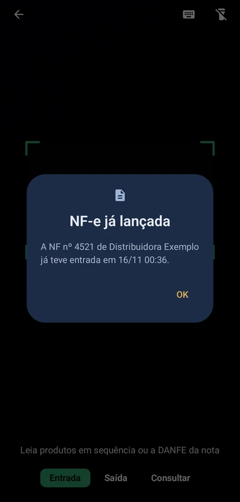

Entrada e saída pela câmera
Aponte para o código de barras e lance a movimentação. Dá para ler vários produtos em sequência, com vibração e confirmação visual.
Dê entrada e saída lendo o código de barras com a câmera, importe a NF-e do fornecedor em um toque e veja o estoque atualizado em todos os celulares da equipe, mesmo sem internet.
Android 8 ou superior · Funciona offline
Feito para a rotina de hotel: almoxarifado, bares, cozinha, room service, frigobar e eventos usando o mesmo estoque.
Aponte para o código de barras e lance a movimentação. Dá para ler vários produtos em sequência, com vibração e confirmação visual.
Abra o XML da nota e o app lista os itens, encontra os produtos já cadastrados e converte caixas em unidades.
Defina o estoque mínimo de cada item e veja na hora o que precisa repor e quais lotes vencem nos próximos 7 dias.
Cada hotel tem um código de convite. Quem entra vê o mesmo estoque em tempo real, e cada lançamento registra o responsável.
Valor em estoque, itens a repor, movimentações do dia e quanto cada setor consumiu nos últimos 30 dias.
Exporte a posição de estoque e as movimentações em CSV, prontos para abrir no Excel e enviar por WhatsApp ou e-mail.
O fornecedor envia o XML da NF-e por e-mail. Toque no anexo, escolha Importar NF-e no BStock e confira a lista antes de lançar.

O código de barras da DANFE identifica a nota. Se ela já foi lançada por qualquer pessoa da equipe, o app avisa na hora, com data e responsável.

Receba o APK do responsável e instale nos celulares da equipe. Não precisa de loja nem de cadastro para começar.
Em Mais → Nuvem e equipe, crie a conta e o hotel. Compartilhe o código de convite com a equipe.
Leia códigos de barras, importe NF-e e acompanhe o painel. Tudo fica sincronizado.
Toque em cada tópico para abrir as instruções.
Atualizações: instale o APK novo por cima do antigo. Os dados são mantidos.
Cada hotel é separado: um hotel nunca vê os dados de outro.
Ao ler um código novo, o app tenta preencher o nome do produto pela internet.
Sem câmera ou com código danificado? Toque no ícone de teclado para digitar o código.
Da segunda nota do mesmo fornecedor em diante, os itens já vêm vinculados automaticamente.
Movimentações não podem ser editadas nem apagadas uma a uma: o histórico fica completo para auditoria.
O BStock grava tudo primeiro no celular. Sem sinal (câmara fria, almoxarifado no subsolo), continue lançando normalmente. Quando a conexão voltar, o app envia as alterações sozinho.
Não. O app funciona offline e sincroniza quando a conexão voltar. A internet só é necessária para criar a conta e entrar no hotel.
Sim. Cada hotel tem o próprio estoque e o próprio código de convite, e os dados de um hotel nunca aparecem para outro.
O saldo é calculado pela soma das movimentações. Mesmo lançando offline ao mesmo tempo, o estoque fica certo quando todos sincronizam.
Sim. Sem conta, o BStock funciona só no aparelho. Se depois criar a conta, os dados podem ser enviados para a nuvem.
Lê EAN-13, EAN-8, UPC, Code 128, Code 39, ITF, QR Code e Data Matrix, além da chave de acesso da DANFE.
Por enquanto, o BStock é apenas para Android 8 ou superior.
A versão 1.0 para Android é distribuída diretamente pelo responsável do estoque do hotel. Peça a ele o arquivo BStock.apk e o código de convite da equipe.